Integrar lo disponible · Evolucionar con agilidad - Reducción de Costos
Modernizar el Portal de Seguros Online ya no tiene que ser un proyecto eterno ni una apuesta a reescribirlo todo. Hoy podemos partir de capacidades reales ya construidas — administración y seguridad, cotización y emisión, órdenes médicas, notificaciones y mensajes, consultas varias, registro de transacciones y traza — e integrarlas en una experiencia unificada para clientes, fuerza de ventas, prestadores y personal interno.
Lo que falta se completa con el mismo modelo de Formas Configurables: pantallas y flujos definidos por configuración, reutilizables entre dominios y listos para evolucionar con el negocio. No es un big-bang. Es ensamblar lo disponible y completar lo restante, con entregables visibles desde la primera fase y sin abandonar la lógica que la compañía ya conoce.
El resultado es un Portal moderno, coherente y preparado para crecer: menos fricción para el usuario, más velocidad para el negocio y una base sólida para seguir sumando capacidades — siniestros, cartera, requerimientos, documentos y más — cuando haga falta.
Nunca antes fue más fácil modernizar el Portal.
Un Portal de Seguros Online centraliza la atención digital a cuatro públicos clave. Sobre esa base se articulan las capacidades que el negocio necesita operar día a día.
Consulta, autogestión y seguimiento de su relación con la aseguradora
Productores: cotización, emisión y acompañamiento comercial
Clínicas, talleres, funerarias, grúas, etc.
Empleados de la compañía: Comercial, Siniestros, Operaciones, Finanzas, etc.
La propuesta: construir este Portal sobre una plataforma moderna, reutilizando capacidades ya disponibles y completando el resto con Formas Configurables, para ganar velocidad de entrega y facilitar la evolución del negocio.
El nuevo Portal se organiza en tres capas: una experiencia unificada, aplicaciones por dominio de negocio, y un motor compartido de Formas Configurables que acelera la construcción y el mantenimiento. Toda esa arquitectura se apoya en Spring Boot y React: frameworks maduros, ampliamente adoptados en la industria, con ecosistema sólido, talento disponible y un historial probado en soluciones empresariales de alto volumen. Esa base tecnológica aporta seguridad, escalabilidad y velocidad de evolución — y hace competitiva la plataforma frente a alternativas más rígidas o menos consolidadas.
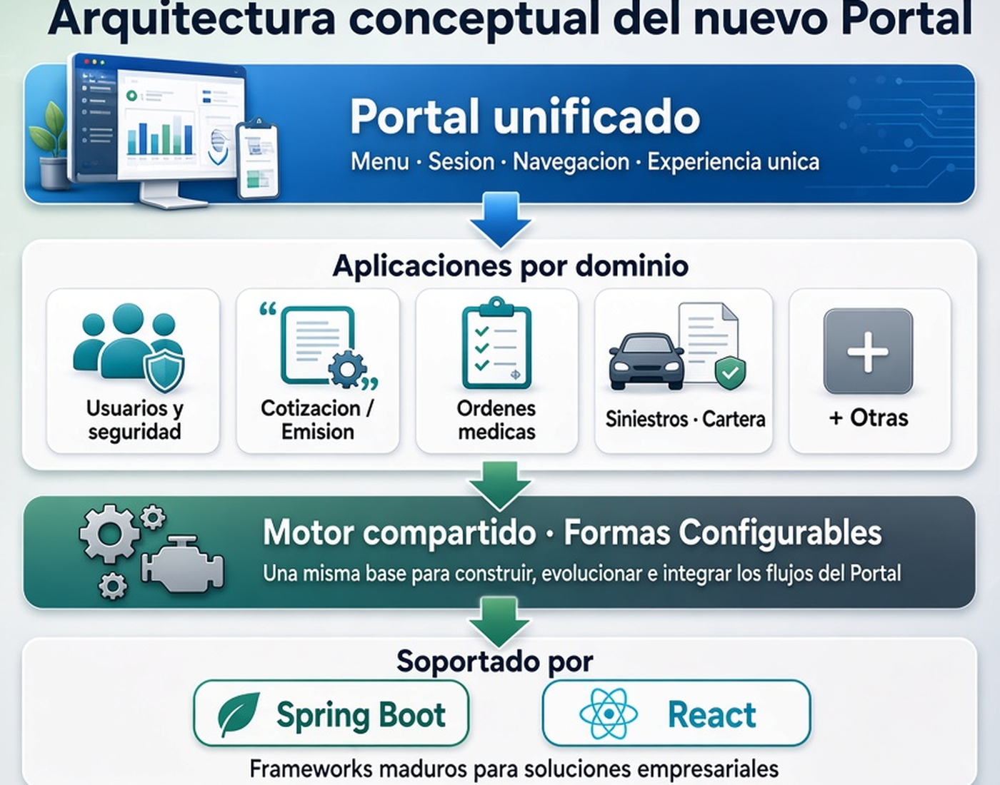
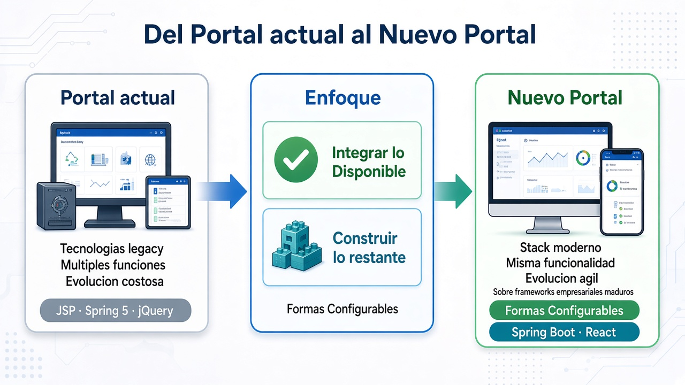
Esa misma arquitectura se concreta en la práctica: un Portal unificado que integra aplicaciones por dominio sobre una base compartida. Cada dominio aporta su lógica de negocio; el motor común garantiza coherencia y velocidad de construcción.
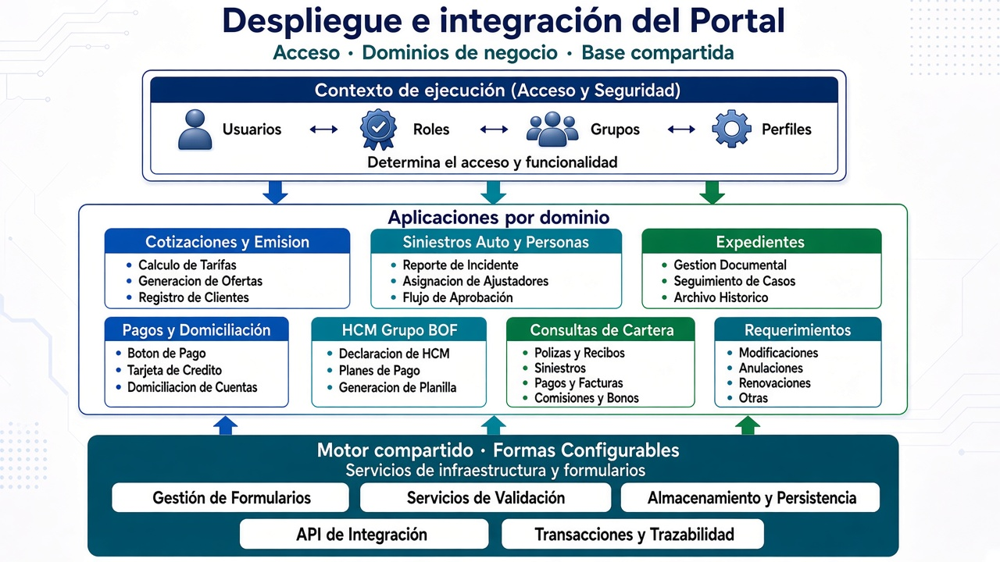
El alcance de Formas Configurables va más allá de “armar pantallas”: es un modelo para crear aplicaciones dinámicas de captura y operación — formularios, wizards, consultas, documentos y flujos por pasos — a partir de una definición configurable, reutilizable entre dominios del Portal (usuarios, cotización y emisión, órdenes médicas, y lo que se complete después).
La idea es simple y poderosa: en lugar de programar cada pantalla como un desarrollo aislado, se describe el comportamiento en configuración y un motor compartido — sobre Spring Boot y React — lo interpreta en tiempo de ejecución. Así se construye de forma efectiva (menos código repetido, misma experiencia en todo el Portal) y ágil (cambios de negocio vía configuración, sin redesplegar por cada ajuste de campos, textos o pasos).
Ese enfoque permite modernizar sin big-bang: integrar lo ya disponible, completar lo faltante con el mismo patrón y evolucionar el Portal con entregables visibles en cada fase — manteniendo coherencia, trazabilidad y velocidad de respuesta al negocio.
Nuevos flujos y ajustes de captura sin desarrollar cada pantalla desde cero.
Cambios de textos, campos y pasos mediante configuración, sin redespliegues continuos.
Misma lógica de formularios, consultas y navegación en todo el Portal.
Las pantallas actuales se pueden documentar y traducir al nuevo modelo de forma sistemática.
Spring Boot + React: base madura, lista para entornos contenedorizados y evolución continua.
Reutilizar lo disponible y completar por fases, con entregables visibles en cada etapa.
Registro homogéneo de transacciones y traza de operación en cada flujo, integrado al motor compartido.
Contraste entre construir pantallas y flujos a la manera tradicional y hacerlo con Formas Configurables — en los puntos que más impactan costo, tiempo y mantenimiento.
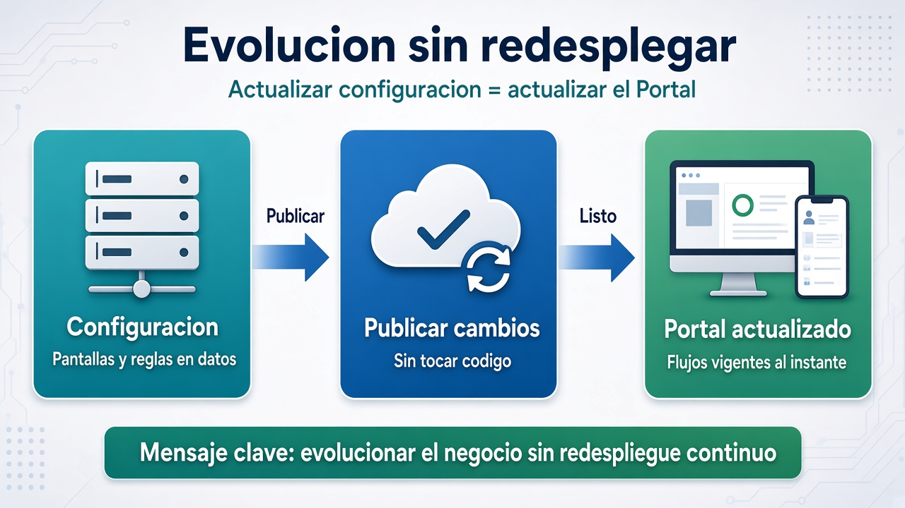
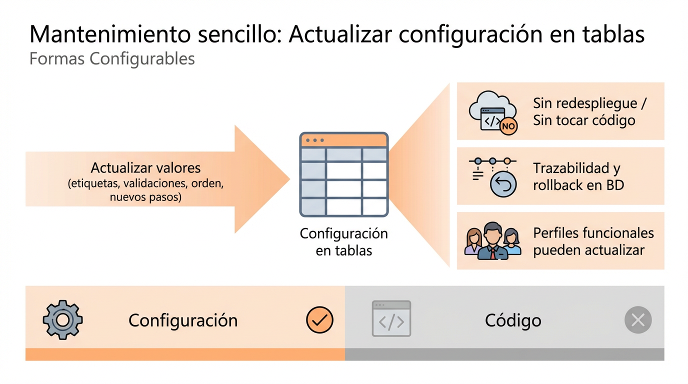
“Disponible” aquí no significa un mockup ni un plan a futuro: son capacidades reales, construidas y operativas, levantadas con el mismo enfoque de Formas Configurables sobre Spring Boot y React que ya describimos. Pantallas, flujos, validaciones y reglas de negocio ya corren hoy; no hay que reinventarlas para el nuevo Portal.
Eso cambia el punto de partida del proyecto. En lugar de desarrollar desde cero administración de usuarios, cotización y emisión, órdenes médicas, notificaciones o el registro de transacciones y traza, se integran piezas probadas al Portal unificado: misma lógica de configuración, misma experiencia de captura y la posibilidad de evolucionarlas sin redesplegar por cada ajuste. Parte significativa del valor de la primera fase ya está hecha; el esfuerzo se concentra en ensamblar, adaptar y completar lo faltante.
En la práctica: menor riesgo, menor tiempo hasta el primer entregable visible y coherencia con el modelo que sostendrá el resto de la modernización.
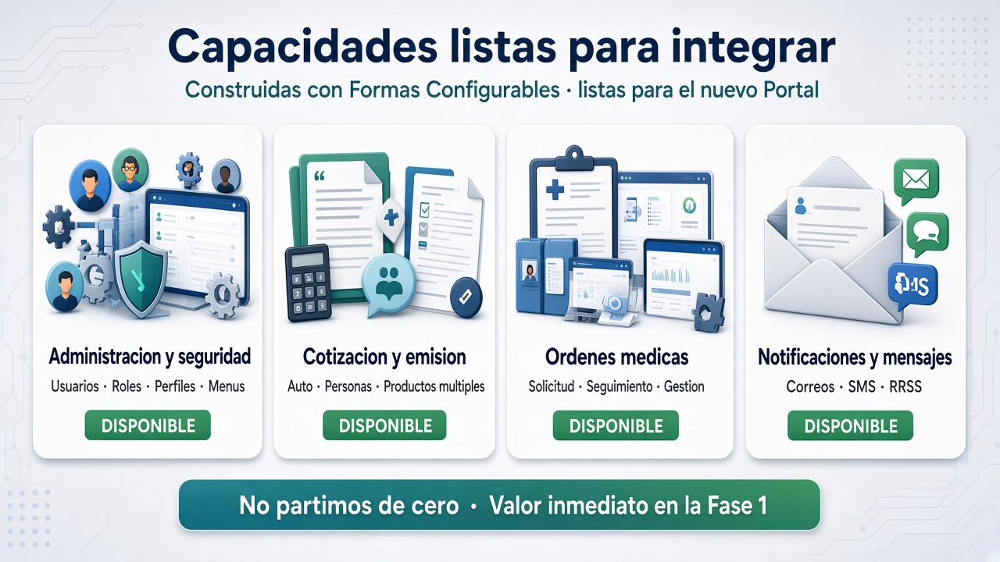
Con lo ya disponible como base, el siguiente paso es ver con claridad qué se integra de inmediato y qué se completa con el mismo modelo. No es un big-bang: es ensamblar + construir lo restante, con un proceso repetible a partir del inventario del Portal actual y de Formas Configurables.
Listas para integrar
Valor inmediato en la primera fase
Se completan con el mismo modelo
Formas Configurables · por fases
Para las capacidades por construir, el camino es el mismo en cada dominio: inventariar lo existente, traducir pantallas y flujos a configuración de Formas Configurables, probar e integrar al Portal — de forma manual o acelerada a partir de descripciones e imágenes del Portal actual.
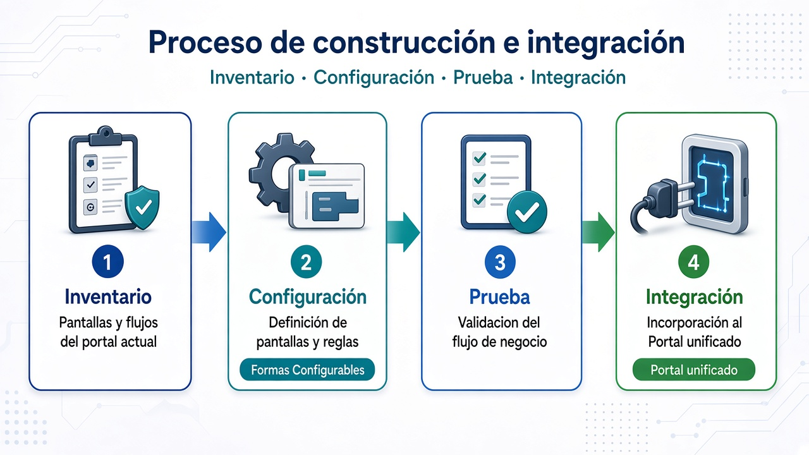
Un paso clave es obtener la configuración JSON de Formas Configurables a partir del material funcional que ya existe. Esa configuración es lo que el motor interpreta para materializar pantallas y flujos — sin reescribir cada pantalla como desarrollo aislado.
La configuración puede construirse por distintas vías, según el material disponible: de forma manual (definición directa en JSON); a partir de texto en lenguaje natural (especificaciones, reglas de negocio o descripciones funcionales); desde imágenes de pantallas, wireframes o HTML de referencia; o tomando como base las pantallas legacy del Portal actual. En todos los casos el resultado es el mismo: archivos de configuración que Formas Configurables ejecuta como pantallas y flujos listos para integrar al Portal unificado.
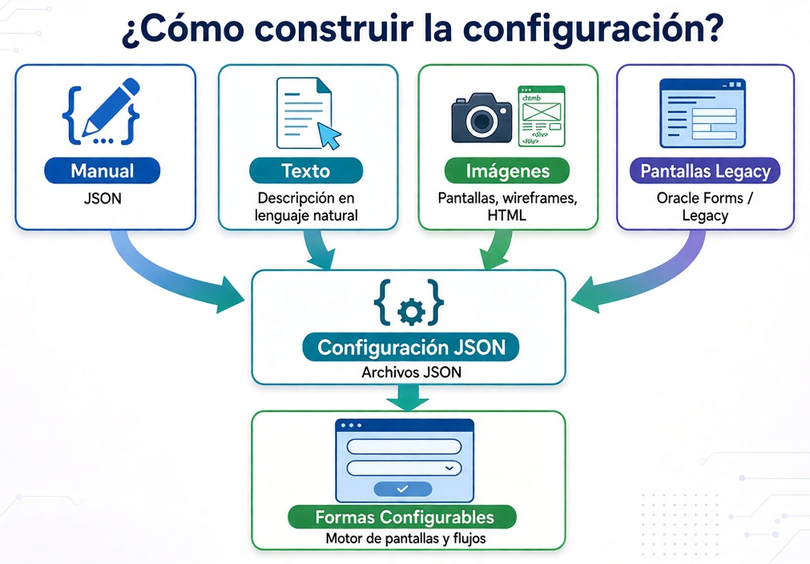
Ese proceso se ordena en un camino de implementación por fases: entregar valor temprano, reducir el riesgo de migración y dejar en cada etapa un entregable visible para el negocio.
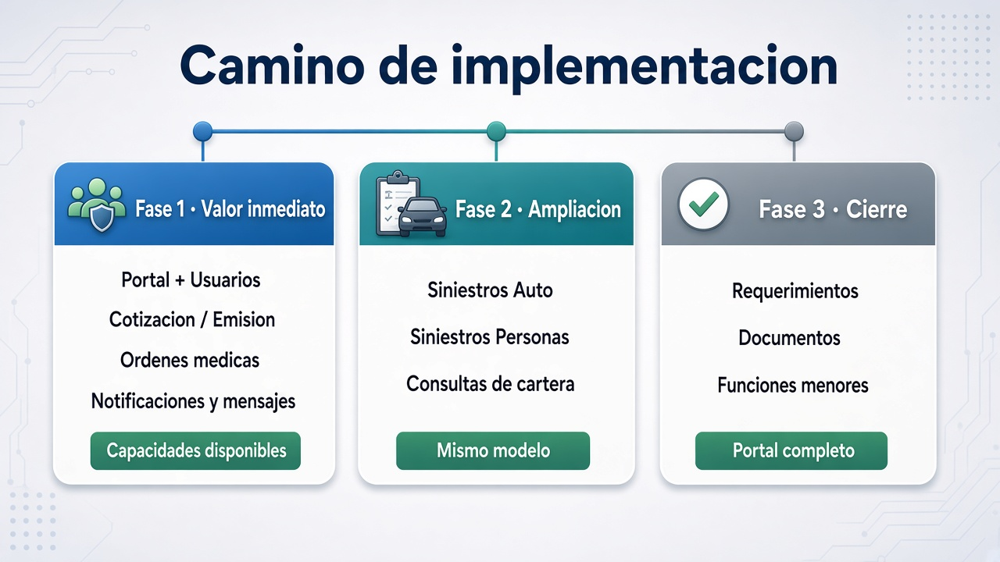
Con Formas Configurables ya es posible ensamblar el Portal reutilizando capacidades y completando lo restante por configuración. El siguiente salto es automatizar ese ciclo mediante un MCP (Model Context Protocol: una capa de herramientas que permite a agentes de IA operar sobre el ciclo de construcción — leer definiciones funcionales, generar y validar configuración, publicar y ejecutar pruebas con evidencia.
Esos agentes pueden ejecutarse sobre LLMs comerciales (servicios en la nube) o sobre LLMs locales (modelos desplegados en infraestructura propia). Para un entorno de seguros, la opción local es la recomendada: mayor control sobre datos sensibles, cumplimiento y costos predecibles, sin depender de enviar especificaciones o configuración a proveedores externos.
El objetivo es el mismo en ambos casos: pasar de definiciones funcionales en documentos a aplicaciones listas, validadas y con evidencia de pruebas.
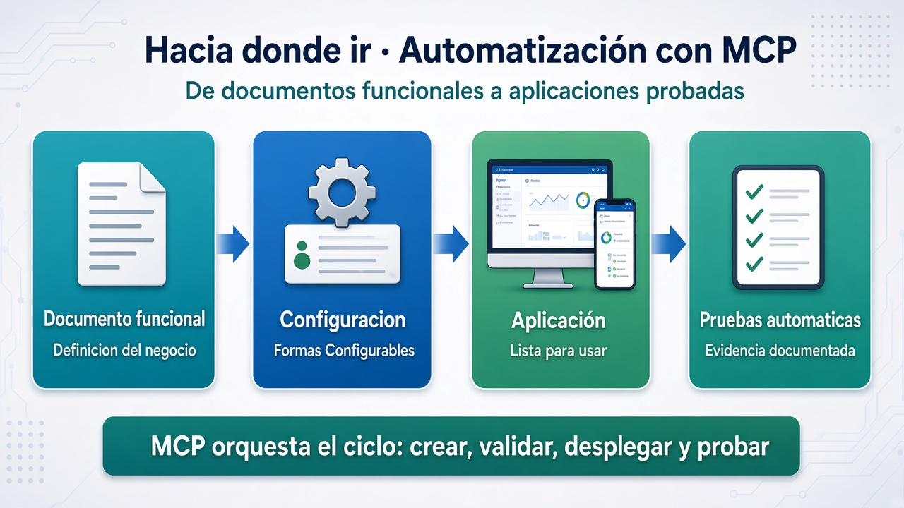
Definiciones funcionales (especificaciones, pantallas, prototipos) se convierten en configuración de Formas Configurables.
La configuración alimenta el runtime existente: pantallas, flujos y consultas sin reinventar cada módulo en código.
Se generan y ejecutan pruebas del comportamiento del flujo, con informes que documentan lo construido.
No se trata de “inventar” toda la lógica de negocio desde un PDF, sino de un pipeline de producto: el documento produce configuración auditable, Formas Configurables la ejecuta, y el MCP orquesta validación, publicación, identificación de pendientes de dominio y evidencia de pruebas.
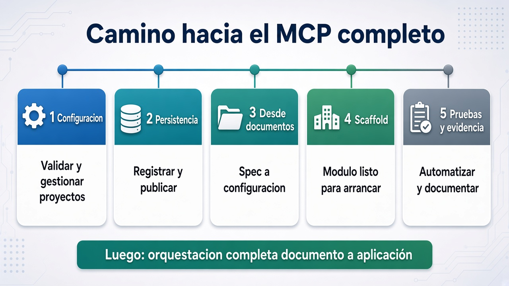
Con Formas Configurables, cada funcionalidad nueva es principalmente configuración JSON interpretada por el mismo motor (pantallas, flujos, validaciones e integración al Portal). Eso implica:
En resumen: el modelo por configuración industrializa la construcción (mismo motor, muchas definiciones); el modelo tradicional asistido por agente artesanaliza cada funcionalidad (muchos artefactos únicos), y eso escala peor en costo, riesgo, consistencia y tiempo de entrega.